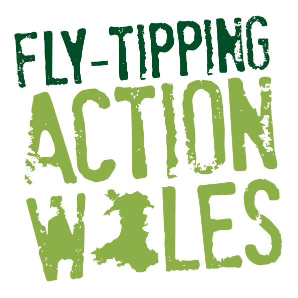

Fly Tipping Wales
Fly Tipping Wales is a project I worked on passionately in a group to address the issue of illegal dumping. We developed an interactive form that allows users to report fly tipping incidents efficiently and spread awareness about its environmental impact.
Through this project, I learned valuable lessons in teamwork, user-centered design, and the importance of civic responsibility. Our goal was to create a practical solution that empowers communities to take action against fly tipping and protect our environment.